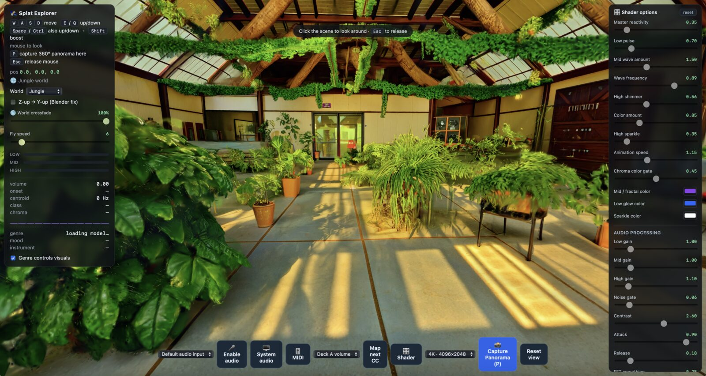
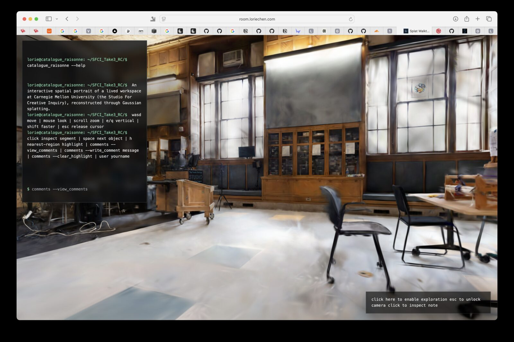
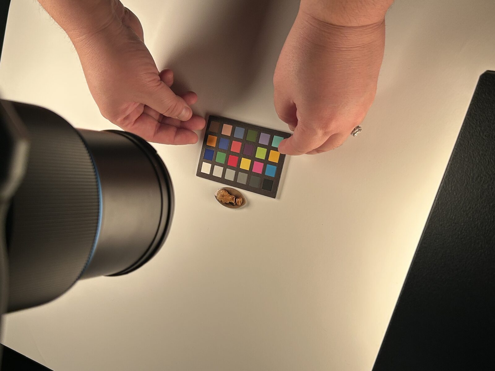
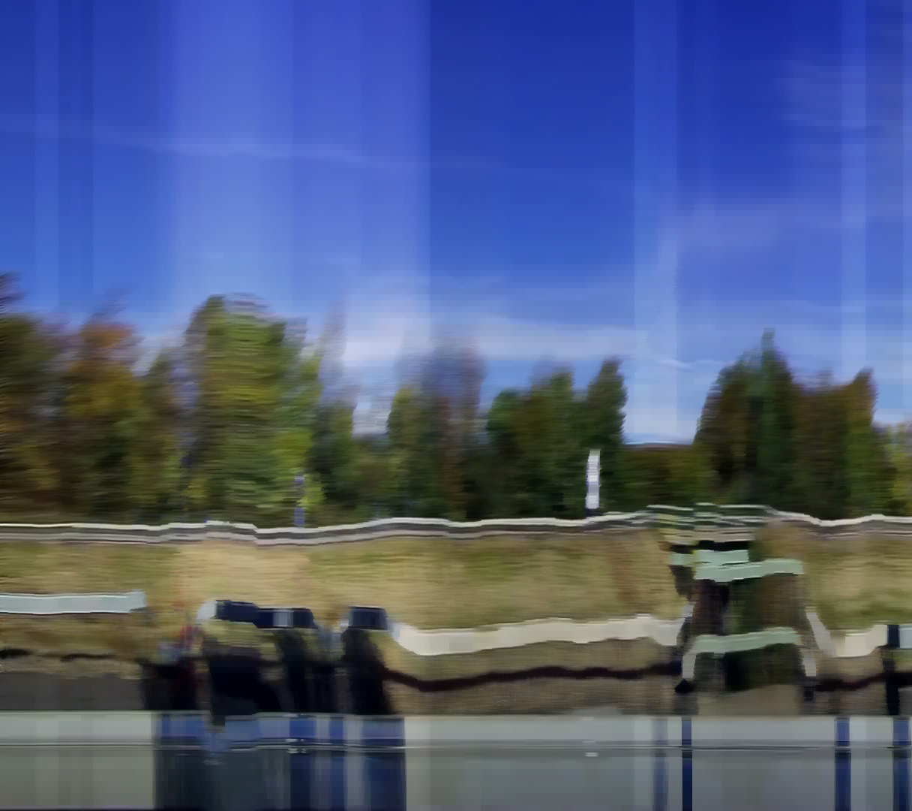
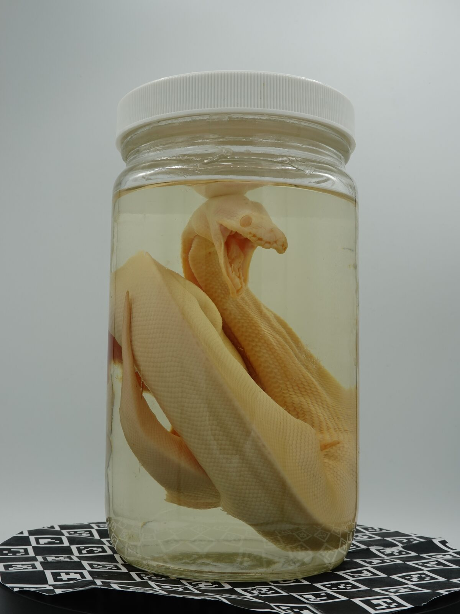

synth splat
A realistic 3D environment that responds to music
Creative technologist · artist · engineer
Open to creative-tools and spatial-computing teams
I build small experimental tools with AI, graphics, robotics, and interactive tech. I want to know what artists do when they can reshape the technology itself.

A realistic 3D environment that responds to music

A walkable 3D room that works like a searchable archive

A new 3D scanning method for historic cameo-glass gems

Landscapes, observed and drawn by machines

Capturing reflective, transparent specimens in 3D, where photogrammetry fails
Custom ComfyUI tools that let artists change what the model does